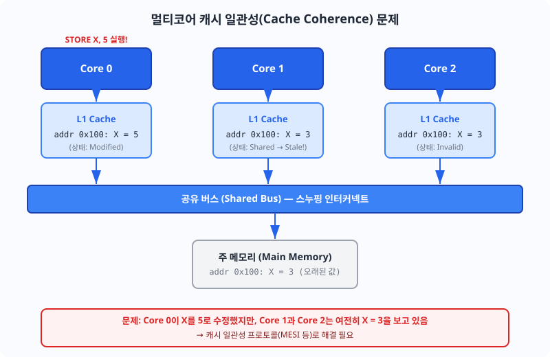
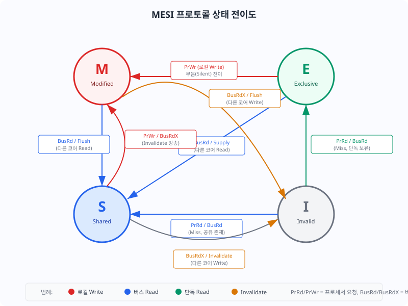
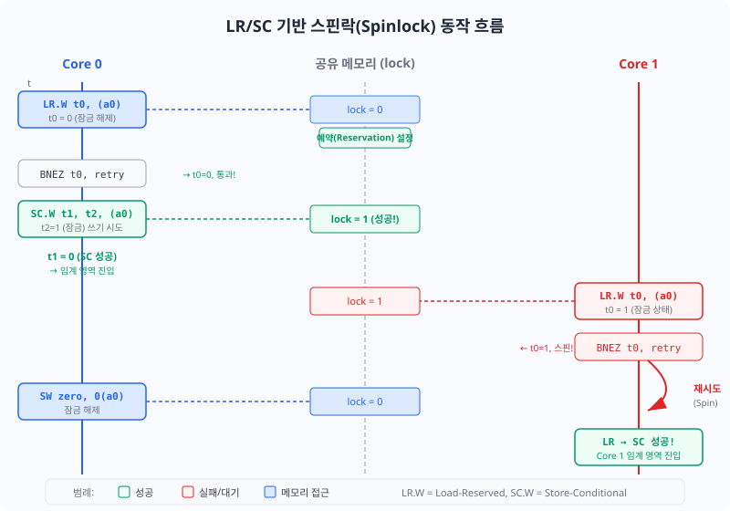

단일 코어에서 다중 코어로 확장할 때 여러 프로세서가 동일한 메모리를 공유하면서 발생하는 캐시 일관성 문제를 이해하고, MESI 프로토콜로 이를 해결하는 방법을 습득한다. 또한 LR/SC 원자 연산을 이용해 스핀락과 같은 동기화 메커니즘을 설계한다.
지금까지 우리가 설계한 모든 프로세서는 단일 코어(single-core) 아키텍처였다. 그런데 현실의 스마트폰, 서버, 임베디드 시스템은 거의 모두 멀티코어 프로세서를 탑재하고 있다. 멀티코어로 확장하면서 우리는 새로운 도전에 직면하게 된다: 여러 프로세서가 동일한 메모리 주소를 동시에 접근할 때 데이터 일관성을 어떻게 보장할 것인가?
간단한 예를 생각해 보자. Core 0이 메모리 주소 0x100에 저장된 변수 X를 값 10에서 20으로 수정한다고 하자. Core 1은 같은 주소 0x100을 읽으려고 한다. Core 0의 수정이 캐시에만 머물러 있고 메인 메모리에 아직 반영되지 않았다면, Core 1이 읽는 값은 구(old) 값인 10일까, 신(new) 값인 20일까? 이것은 단순한 궁금증이 아니라, 프로세서 아키텍처의 정확성(correctness) 문제를 좌우한다.
또 다른 각도에서, 온라인 협업 문서(Google Docs)를 생각해 보자. 여러 편집자가 동시에 같은 문서를 수정한다. 편집자 A가 문장을 변경하면, 편집자 B의 화면에는 즉시 업데이트된 내용이 반영된다. 이는 클라우드 서버가 중앙에서 "동기화"와 "일관성"을 관리하기 때문이다. MESI도 이와 유사하게, 버스(bus)를 통해 모든 캐시 간 동기화를 실시간으로 관리한다.
단일 코어에서는 캐시가 "개인 소유"이기 때문에 일관성 문제가 없다. CPU가 캐시를 읽고 쓰고 수정해도, 결국 자신의 메모리 뷰만 관리하면 된다. 하지만 멀티코어에서는 여러 캐시가 동일한 메모리 라인(cache line)을 보유할 수 있다는 상황이 발생한다:
이 문제를 해결하기 위해, 멀티코어 프로세서는 캐시 일관성 프로토콜(cache coherence protocol)을 구현한다. MESI는 가장 널리 사용되는 프로토콜이다.

MESI는 각 캐시 라인이 가질 수 있는 4가지 상태를 정의한다. 각 캐시 라인의 헤더에는 이 상태를 나타내는 비트들이 저장된다:
상태 간 전이는 두 가지 종류의 이벤트에 의해 발생한다:

MESI 상태도가 처음엔 복잡해 보일 수 있지만, 몇 가지 핵심 전이 패턴만 이해하면 충분하다:
시나리오 1: Read Miss → Exclusive 또는 Shared
캐시 미스로 인해 Invalid 상태에서 벗어난다. 메인 메모리가 이 라인의 최신 값을 응답할 때, "다른 캐시도 이 라인을 가지고 있는가?"를 확인한다. 아무도 가지지 않았다면 Exclusive 상태로, 다른 캐시도 가지고 있다면 Shared 상태로 전이한다.
시나리오 2: Exclusive → Modified (로컬 쓰기)
이미 Exclusive 상태에서는 다른 캐시가 이 라인을 가지지 않고 있음이 보장된다. 따라서 로컬 쓰기를 하면, 버스 트랜잭션 없이 조용히(silently) Modified 상태로 전이한다. 이를 "Silent transition"이라 부른다.
시나리오 3: Shared → Modified (로컬 쓰기)
Shared 상태에서는 다른 캐시도 이 라인을 가지고 있을 수 있다. 쓰기를 하려면 먼저 다른 캐시의 복사본을 모두 무효화(invalidate)해야 한다. 이를 위해 BusRdX(Read-Exclusive, 쓰기 의도 신호)를 버스에 방송한다. 다른 캐시들이 이 신호를 감시하면 자신의 복사본을 Invalid 상태로 전이한다.
시나리오 4: Modified → Shared 또는 Invalid (버스 이벤트)
다른 코어가 메모리를 읽으려는 신호(BusRd)를 버스에서 감시하면, 이 캐시는 최신 데이터를 메모리에 기록(flush)하고 Shared 상태로 전이한다. 만약 다른 코어가 쓰기를 의도하는 신호(BusRdX)를 감시하면, 데이터를 기록하고 Invalid 상태로 전이한다.
MESI 프로토콜이 동작하려면, 모든 캐시가 버스의 모든 트랜잭션을 감시해야 한다. 이를 "스누핑(snooping)" 또는 "리슨(listening)"이라 부른다.
아키텍처 레벨에서 보면:
이는 각 캐시가 "다른 캐시의 움직임"을 실시간으로 인지하도록 강제하므로, 모든 캐시가 일관된 데이터를 볼 수 있도록 보장한다. 대신, 버스 트래픽이 증가하고 모든 캐시가 항상 주시해야 하므로 전력 소비가 증가한다는 트레이드오프가 있다.
실제로 MESI 프로토콜을 하드웨어로 구현하는 방법을 보자. 다음 코드는 단일 캐시 라인의 MESI 상태를 관리하는 조합 논리(combinational logic)를 보여준다. 각 캐시 라인마다 이러한 상태 머신을 하나씩 인스턴스화해야 한다.
// MESI 캐시 라인 상태 추적기 (단순화 모델)
module mesi_tracker (
input logic clk,
input logic rst_n,
// 프로세서 요청
input logic pr_rd, // 프로세서 Read 요청
input logic pr_wr, // 프로세서 Write 요청
// 버스 스누핑 입력
input logic bus_rd, // 다른 코어의 Read 관찰
input logic bus_rdx, // 다른 코어의 Read-Exclusive (Write 의도)
// 메모리 응답
input logic mem_shared, // 메모리 응답: 다른 캐시에도 복사본 존재
// 상태 출력
output logic [1:0] state, // 현재 MESI 상태
// 버스 동작 출력
output logic do_flush, // 수정된 데이터를 메모리에 기록
output logic do_bus_rd, // 버스 Read 트랜잭션 발생
output logic do_bus_rdx, // 버스 Read-Exclusive 트랜잭션 발생
output logic do_invalidate // 자신의 캐시 라인을 무효화
);
// MESI 상태 인코딩
localparam logic [1:0] MODIFIED = 2'b00;
localparam logic [1:0] EXCLUSIVE = 2'b01;
localparam logic [1:0] SHARED = 2'b10;
localparam logic [1:0] INVALID = 2'b11;
logic [1:0] state_next;
// 상태 레지스터 (flip-flop)
always_ff @(posedge clk or negedge rst_n) begin
if (!rst_n)
state <= INVALID;
else
state <= state_next;
end
// 다음 상태 결정 (조합 논리)
always_comb begin
// 기본값: 현재 상태 유지
state_next = state;
do_flush = 1'b0;
do_bus_rd = 1'b0;
do_bus_rdx = 1'b0;
do_invalidate = 1'b0;
case (state)
// Modified: 이 캐시만 유일한 최신 복사본 보유
MODIFIED: begin
if (bus_rd) begin
// 다른 코어가 읽기 요청 → Shared로 전이
state_next = SHARED;
do_flush = 1'b1; // 메모리에 기록
end
else if (bus_rdx) begin
// 다른 코어가 쓰기 의도 → Invalid로 전이
state_next = INVALID;
do_flush = 1'b1;
do_invalidate = 1'b1;
end
end
// Exclusive: 이 캐시만 보유, 메모리와 동일
EXCLUSIVE: begin
if (pr_wr) begin
// 로컬 쓰기 → Modified로 (Silent)
state_next = MODIFIED;
end
else if (bus_rd) begin
// 다른 코어가 읽기 → Shared로
state_next = SHARED;
end
else if (bus_rdx) begin
// 다른 코어가 쓰기 의도 → Invalid로
state_next = INVALID;
do_invalidate = 1'b1;
end
end
// Shared: 여러 캐시가 동일한 값 보유
SHARED: begin
if (pr_wr) begin
// 로컬 쓰기 → 다른 복사본 무효화 후 Modified
state_next = MODIFIED;
do_bus_rdx = 1'b1; // BusRdX 방송
end
else if (bus_rdx) begin
// 다른 코어가 쓰기 의도 → Invalid로
state_next = INVALID;
do_invalidate = 1'b1;
end
end
// Invalid: 유효한 데이터 없음
INVALID: begin
if (pr_rd) begin
// 로컬 읽기 미스
do_bus_rd = 1'b1;
if (mem_shared)
state_next = SHARED; // 다른 캐시에도 있으면 Shared
else
state_next = EXCLUSIVE; // 단독이면 Exclusive
end
else if (pr_wr) begin
// 로컬 쓰기 미스 → BusRdX 후 Modified
state_next = MODIFIED;
do_bus_rdx = 1'b1;
end
end
default: state_next = INVALID;
endcase
end
endmodule
이 모듈의 핵심을 이해하는 포인트:
MESI 프로토콜이 일관성을 보장하는 대가는 무엇인가?
1) 버스 트래픽 증가: 모든 캐시 컨트롤러가 모든 버스 트랜잭션을 관찰해야 하므로, 버스 대역폭이 낭비된다. 멀티코어가 많아질수록 이 오버헤드는 더 커진다.
2) Invalidation 지연: Shared 상태에서 쓰기를 하려면 다른 캐시의 복사본을 무효화해야 한다. BusRdX를 보낸 후, 다른 캐시들이 응답할 때까지 기다려야 하므로 지연이 발생한다.
3) 캐시 미스 증가: 다른 코어가 자주 같은 데이터를 접근하면, 자신의 캐시 라인이 계속 Invalid 상태로 전이되므로 미스가 증가한다. 이를 "cache thrashing"이라 부른다.
반대로, MESI의 장점은:
Part 5의 성능 분석(Ch15)에서 배웠듯이, L1 캐시 히트율과 CPI는 성능을 결정하는 핵심이다. 멀티코어에서는 여기에 "캐시 일관성 지연"이 추가된다. 좋은 멀티코어 설계는 데이터 접근 패턴을 최적화하여 캐시 일관성으로 인한 오버헤드를 최소화하는 것이다.
멀티코어 환경에서 여러 프로세서가 동시에 실행되면, 임계 영역(critical section)에 접근할 때 조율이 필요하다. 예를 들어, 공유 큐(queue)에 데이터를 삽입하거나, 공유 카운터를 증가시키는 작업은 원자적으로(atomically) 수행되어야 한다. 즉, "읽기 → 수정 → 쓰기"가 중간에 중단되지 않고 한 덩어리로 실행되어야 한다.
그런데 일반적인 메모리 쓰기 명령어(SW)는 원자성을 보장하지 않는다. Core 0이 읽기 직후, Core 1이 같은 주소를 수정할 수 있기 때문이다. 이 문제를 해결하기 위해, RISC-V는 A 확장(Atomic Instructions Extension)의 일부로 LR(Load-Reserved)과 SC(Store-Conditional) 명령어를 제공한다.
LR.W(Load-Reserved Word): 메모리 주소에서 32비트 데이터를 읽고, 그 주소에 대해 "예약(reservation)"을 설정한다. 예약은 주소와 코어 ID를 함께 저장한다.
SC.W(Store-Conditional Word): 예약이 여전히 유효한지 확인하고, 유효하면 메모리에 데이터를 쓴다. 반환값(rd 레지스터)으로:
예약이 무효화되는 경우:
핵심은 "LR과 SC 사이에 코드가 있어도 된다"는 점이다. 이는 메모리 읽기 후 어떤 계산을 수행하고 나서 쓸 수 있다는 뜻이다. 이를 이용해 "Compare-And-Swap" 같은 고급 동기화 연산을 구현할 수 있다.

RISC-V 명령어 집합에서 LR.W와 SC.W의 인코딩:
// RISC-V LR.W 명령어
// LR.W rd, (rs1)
// | funct7 (1100001) | aq | rl | rs2(00000) | rs1 | funct3(010) | rd | opcode(101111) |
//
// 예: LR.W t0, (a0)
// rd = t0 (x5), rs1 = a0 (x10)
// funct7 = 0010001 (AMO operation)
// aq(acquire) = 1, rl(release) = 0 (기본값)
//
// RISC-V SC.W 명령어
// SC.W rd, rs2, (rs1)
// | funct7 (0011000) | aq | rl | rs2 | rs1 | funct3(010) | rd | opcode(101111) |
//
// 예: SC.W t1, t2, (a0)
// rd = t1 (x6), rs1 = a0 (x10), rs2 = t2 (x7)
// rd는 SC의 결과를 받음: 0 = 성공, 1 = 실패
// 컨트롤 신호 디코딩 (파이프라인 내)
logic [6:0] funct7;
logic [2:0] funct3;
logic [6:0] opcode;
logic is_lr, is_sc;
always_comb begin
opcode = instr[6:0];
funct3 = instr[14:12];
funct7 = instr[31:25];
is_lr = (opcode == 7'b101111) && (funct3 == 3'b010) &&
(funct7 == 7'b0010001) && (instr[24:20] == 5'b00000);
is_sc = (opcode == 7'b101111) && (funct3 == 3'b010) &&
(funct7 == 7'b0011000);
end
파이프라인의 EX 또는 MEM 스테이지에서 LR과 SC를 처리하는 모듈을 살펴보자:
// LR/SC (Load-Reserved / Store-Conditional) 실행 유닛
module lr_sc_unit (
input logic clk,
input logic rst_n,
// 파이프라인 EX 스테이지 인터페이스
input logic ex_lr_w, // LR.W 명령어 실행 중
input logic ex_sc_w, // SC.W 명령어 실행 중
input logic [31:0] ex_addr, // 메모리 주소 (rs1 + offset)
input logic [31:0] ex_wdata, // SC.W 기록 데이터 (rs2 값)
// 외부 스누핑 입력 (다른 코어의 메모리 접근 감시)
input logic snoop_valid, // 다른 코어의 메모리 접근 발생
input logic [31:0] snoop_addr, // 다른 코어가 접근한 주소
input logic snoop_write, // 다른 코어의 쓰기 접근 여부
// 메모리 인터페이스 출력
output logic mem_rd, // 메모리 읽기 요청 (LR.W)
output logic mem_wr, // 메모리 쓰기 요청 (SC.W 성공 시)
output logic [31:0] mem_addr, // 메모리 주소
output logic [31:0] mem_wdata, // 메모리 기록 데이터
// SC.W 결과 (rd 레지스터에 기록)
output logic sc_success, // SC.W 성공 여부 (0=성공, 1=실패)
output logic sc_result_valid // SC.W 결과 유효
);
// 예약 레지스터
logic reservation_valid;
logic [31:0] reservation_addr;
// 예약 일치 판정 (워드 정렬 주소 비교)
logic addr_match;
assign addr_match = reservation_valid &&
(reservation_addr[31:2] == ex_addr[31:2]);
// ---------------------------------------------------------------
// 예약 레지스터 관리
// ---------------------------------------------------------------
always_ff @(posedge clk or negedge rst_n) begin
if (!rst_n) begin
reservation_valid <= 1'b0;
reservation_addr <= 32'h0;
end
else begin
// 우선순위 정책:
// (1) SC.W 실행 → 예약 해제 (성공/실패와 무관)
// (2) 스누핑으로 무효화
// (3) LR.W 실행 → 새 예약 설정
if (ex_sc_w) begin
// SC.W가 실행되면 예약 해제
reservation_valid <= 1'b0;
end
else if (snoop_valid && reservation_valid &&
(snoop_addr[31:2] == reservation_addr[31:2])) begin
// 다른 코어가 예약된 주소에 쓰기 → 예약 무효화
if (snoop_write)
reservation_valid <= 1'b0;
end
else if (ex_lr_w) begin
// LR.W 실행 → 새로운 예약 설정
reservation_valid <= 1'b1;
reservation_addr <= ex_addr;
end
end
end
// ---------------------------------------------------------------
// 메모리 인터페이스 및 SC 결과 생성
// ---------------------------------------------------------------
always_comb begin
// 기본값
mem_rd = 1'b0;
mem_wr = 1'b0;
mem_addr = ex_addr;
mem_wdata = ex_wdata;
sc_success = 1'b0;
sc_result_valid = 1'b0;
if (ex_lr_w) begin
// LR.W: 메모리 읽기 수행
mem_rd = 1'b1;
end
else if (ex_sc_w) begin
sc_result_valid = 1'b1;
if (addr_match) begin
// 예약이 유효하고 주소 일치 → SC 성공
mem_wr = 1'b1;
sc_success = 1'b1; // rd ← 0 (성공)
end
else begin
// 예약 무효 또는 주소 불일치 → SC 실패
mem_wr = 1'b0;
sc_success = 1'b0; // rd ← 1 (실패)
end
end
end
endmodule
이 구현의 중요한 특징:
LR/SC를 이용해 가장 간단한 동기화 메커니즘인 "스핀락"을 구현할 수 있다. 스핀락은 "임계 영역을 획득할 때까지 계속 재시도하는 락(lock)"을 의미한다.
// C 의사 코드
// void spinlock_acquire(volatile int *lock) {
// while (1) {
// int val = load_reserved(lock); // LR.W
// if (val != 0) continue; // BNEZ → 반복
// if (store_conditional(lock, 1) == 0) // SC.W
// break; // 성공, 루프 탈출
// }
// }
// RISC-V 어셈블리
// lock 주소는 a0, 반환값 t1에 저장
// spinlock_acquire:
// lr.w t0, (a0) // t0 = lock 값 읽기 + 예약 설정
// bnez t0, spinlock_acquire // t0 != 0이면 재시도
// sc.w t1, x0, (a0) // x0(zero) = 0을 lock에 저장 (언락)
// bnez t1, spinlock_acquire // SC 실패하면 재시도
// ret // 성공
// SystemVerilog RTL (파이프라인 내에서의 명령어 처리)
// 주의: 이것은 개념 설명이며, 실제 파이프라인 구현과는 다름
logic [31:0] lock_addr = 32'h8000_0000; // 공유 메모리의 lock 변수 주소
// 프로세서 내부 레지스터
logic [31:0] t0, t1;
// LR 실행
always_comb begin
if (ex_lr_w) begin
mem_rd = 1'b1;
mem_addr = lock_addr;
// 메모리로부터 데이터를 받으면 t0에 저장됨 (다음 사이클)
end
end
// BNEZ t0, spinlock_acquire 실행
always_comb begin
if (ex_bnez && t0 != 0) begin
// 조건 true: PC를 spinlock_acquire로 점프
next_pc = spinlock_acquire_addr;
end
end
// SC 실행
always_comb begin
if (ex_sc_w) begin
if (sc_success) begin
// SC 성공: t1 ← 0
t1 = 32'h0;
mem_wr = 1'b1;
mem_addr = lock_addr;
mem_wdata = 32'h0; // unlock: lock = 0
end else begin
// SC 실패: t1 ← 1
t1 = 32'h1;
end
end
end
// 다시 BNEZ t1, spinlock_acquire 실행
// t1 != 0 (실패)이면 루프로 돌아감
스핀락의 동작 흐름:
임계 영역에서 작업을 마친 후, "SW zero, 0(a0)" (또는 "AMOSWAP 0, lock")으로 lock = 0을 기록하여 해제한다.
LR/SC 유닛을 검증하는 간단한 테스트벤치:
// LR/SC 유닛 테스트벤치 (부분)
initial begin
$display("========================================");
$display("LR/SC 유닛 테스트벤치");
$display("========================================");
clear_inputs();
rst_n = 0;
#20;
rst_n = 1;
#10;
// 시나리오 1: LR → SC 성공 (간섭 없음)
$display("\n[시나리오 1] LR.W → SC.W 성공");
ex_lr_w = 1;
ex_addr = 32'h1000;
@(posedge clk); #1;
clear_inputs();
assert(mem_rd == 1) else $error("LR.W 시 mem_rd = 1이어야 함!");
@(posedge clk); #1;
// SC: 같은 주소에 값 42 기록
ex_sc_w = 1;
ex_addr = 32'h1000;
ex_wdata = 32'd42;
@(posedge clk); #1;
assert(sc_success == 1) else $error("SC.W 성공해야 함!");
assert(mem_wr == 1) else $error("SC 성공 시 mem_wr = 1");
clear_inputs();
// 시나리오 2: LR → 스누핑 무효화 → SC 실패
$display("\n[시나리오 2] LR.W → 스누핑 → SC.W 실패");
@(posedge clk); #1;
ex_lr_w = 1;
ex_addr = 32'h2000;
@(posedge clk); #1;
clear_inputs();
@(posedge clk); #1;
// 다른 코어가 같은 주소에 쓰기
snoop_valid = 1;
snoop_addr = 32'h2000;
snoop_write = 1;
@(posedge clk); #1;
clear_inputs();
@(posedge clk); #1;
// SC: 예약이 무효화되었으므로 실패
ex_sc_w = 1;
ex_addr = 32'h2000;
ex_wdata = 32'd99;
@(posedge clk); #1;
assert(sc_success == 0) else $error("SC.W 실패해야 함!");
assert(mem_wr == 0) else $error("SC 실패 시 mem_wr = 0");
clear_inputs();
$display("\n========================================");
$display("모든 시나리오 통과!");
$display("========================================");
#20;
$finish;
end
스핀락은 "간단하지만 비효율적"인 락이다. CPU가 계속 루프를 반복하므로 전력을 낭비한다. 실무에서는 더 정교한 동기화 메커니즘을 사용한다:
뮤텍스(Mutex): "상호 배제(mutual exclusion)"를 구현하는 락. 임계 영역에 한 번에 한 스레드만 진입 가능. POSIX `pthread_mutex`가 대표.
세마포어(Semaphore): 여러 스레드의 접근을 제한하는 카운터 기반 메커니즘. 예: 2개의 프린터를 3개의 스레드가 공유할 때, 세마포어 값 = 2로 설정.
조건 변수(Condition Variable): "특정 조건이 충족될 때까지 대기"하는 메커니즘. 예: 큐가 비어있으면 consumer 스레드는 대기.
이 모든 메커니즘의 기반은 LR/SC(또는 Compare-and-Swap)로 구현된 원자 연산이다. LR/SC 없이는 이들을 안전하게 구현할 수 없다.
LR/SC의 강력함을 이용하면, 락을 사용하지 않고도 멀티스레딩 환경에서 안전한 자료구조를 구현할 수 있다. 이를 "Lock-Free" 또는 "Wait-Free" 알고리즘이라 부른다.
예: Compare-and-Swap 기반 스택
// C 의사 코드 (Lock-Free Stack)
// struct Node { int value; Node *next; };
// Node *top; // 전역 스택 탑 포인터
//
// void push(int value) {
// Node *new_node = malloc(sizeof(Node));
// new_node->value = value;
//
// while (1) {
// Node *old_top = atomic_load(&top);
// new_node->next = old_top;
//
// // Compare-and-Swap: top가 old_top이면 new_node로 업데이트
// if (atomic_compare_and_swap(&top, old_top, new_node))
// break; // 성공
// }
// }
// RISC-V LR/SC로 Compare-and-Swap 구현
// cas(address, expected, new_value) → 성공하면 1, 실패하면 0 반환
//
// cas:
// lr.w t0, (a0) // t0 = *address, 예약 설정
// bne t0, a1, cas_fail // t0 != expected이면 실패
// sc.w t2, a2, (a0) // *address = new_value (조건부)
// bnez t2, cas // SC 실패하면 재시도
// li a0, 1 // 반환값 = 1 (성공)
// ret
// cas_fail:
// li a0, 0 // 반환값 = 0 (실패)
// ret
Lock-Free 알고리즘의 장점:
단점:
Lock-Free 알고리즘은 이 장에서 다루기에는 고급 주제이므로, 이 책의 범위를 벗어난다. 하지만 LR/SC의 원리를 이해하면, 다음 단계로 이들을 학습하는 것은 자연스러운 확장이다.
이 챕터에서 단계별로 설명한 모든 모듈의 완전한 소스 코드입니다. 본문에서 이미 각 코드의 동작 원리를 설명하였으므로, 지금 당장 전부를 이해하려 하지 않아도 됩니다. 다음 챕터에서 이 코드를 기반으로 더 복잡한 멀티코어 시스템을 설계할 예정입니다. 참고용으로 활용하십시오.
// ============================================================================
// MESI 캐시 라인 상태 추적기 (Cache Line State Tracker)
// - 교육용 단순화 모델: 단일 캐시 라인의 MESI 상태 전이를 구현
// - 합성 가능, Basys 3 대상
// ============================================================================
module mesi_tracker (
input logic clk,
input logic rst_n,
// 프로세서 요청 (로컬 코어)
input logic pr_rd, // 프로세서 Read 요청
input logic pr_wr, // 프로세서 Write 요청
// 버스 스누핑 입력 (다른 코어의 버스 트랜잭션)
input logic bus_rd, // 다른 코어의 Read 관찰
input logic bus_rdx, // 다른 코어의 Read-Exclusive (Write 의도)
// 메모리 응답
input logic mem_shared, // 메모리 응답 시 다른 캐시에도 복사본 존재 여부
// 상태 출력
output logic [1:0] state, // 현재 MESI 상태
// 버스 동작 출력
output logic do_flush, // 수정된 데이터를 메모리에 기록
output logic do_bus_rd, // 버스 Read 트랜잭션 발생
output logic do_bus_rdx, // 버스 Read-Exclusive 트랜잭션 발생
output logic do_invalidate // 자신의 캐시 라인을 무효화
);
// MESI 상태 인코딩
localparam logic [1:0] MODIFIED = 2'b00;
localparam logic [1:0] EXCLUSIVE = 2'b01;
localparam logic [1:0] SHARED = 2'b10;
localparam logic [1:0] INVALID = 2'b11;
logic [1:0] state_next;
// 상태 레지스터
always_ff @(posedge clk or negedge rst_n) begin
if (!rst_n)
state <= INVALID;
else
state <= state_next;
end
// 다음 상태 및 출력 결정 (조합 논리)
always_comb begin
// 기본값: 현재 상태 유지, 버스 동작 없음
state_next = state;
do_flush = 1'b0;
do_bus_rd = 1'b0;
do_bus_rdx = 1'b0;
do_invalidate = 1'b0;
case (state)
// ---------------------------------------------------------------
// Modified: 이 캐시만 유일한 최신 복사본 보유 (메모리는 오래됨)
// ---------------------------------------------------------------
MODIFIED: begin
if (bus_rd) begin
// 다른 코어가 읽기 요청 → 데이터 공급 후 Shared로 전이
state_next = SHARED;
do_flush = 1'b1; // 메모리에 기록 (Flush)
end
else if (bus_rdx) begin
// 다른 코어가 쓰기 의도 → 데이터 공급 후 Invalid로 전이
state_next = INVALID;
do_flush = 1'b1;
do_invalidate = 1'b1;
end
// pr_rd, pr_wr → 상태 변화 없음 (이미 Modified)
end
// ---------------------------------------------------------------
// Exclusive: 이 캐시만 보유, 메모리와 동일한 값
// ---------------------------------------------------------------
EXCLUSIVE: begin
if (pr_wr) begin
// 로컬 쓰기 → 버스 트랜잭션 없이 Modified로 (Silent 전이)
state_next = MODIFIED;
end
else if (bus_rd) begin
// 다른 코어가 읽기 → Shared로 전이
state_next = SHARED;
end
else if (bus_rdx) begin
// 다른 코어가 쓰기 의도 → Invalid로 전이
state_next = INVALID;
do_invalidate = 1'b1;
end
// pr_rd → 상태 변화 없음
end
// ---------------------------------------------------------------
// Shared: 여러 캐시가 동일한 값 보유
// ---------------------------------------------------------------
SHARED: begin
if (pr_wr) begin
// 로컬 쓰기 → 다른 복사본 무효화 방송 후 Modified
state_next = MODIFIED;
do_bus_rdx = 1'b1; // BusRdX (Invalidate 방송)
end
else if (bus_rdx) begin
// 다른 코어가 쓰기 의도 → 자신을 Invalid로
state_next = INVALID;
do_invalidate = 1'b1;
end
// pr_rd, bus_rd → 상태 변화 없음
end
// ---------------------------------------------------------------
// Invalid: 유효한 데이터 없음
// ---------------------------------------------------------------
INVALID: begin
if (pr_rd) begin
// 로컬 읽기 미스 → 버스 Read
do_bus_rd = 1'b1;
if (mem_shared)
state_next = SHARED; // 다른 캐시에도 있으면 Shared
else
state_next = EXCLUSIVE; // 단독이면 Exclusive
end
else if (pr_wr) begin
// 로컬 쓰기 미스 → 버스 Read-Exclusive 후 Modified
state_next = MODIFIED;
do_bus_rdx = 1'b1;
end
// bus_rd, bus_rdx → 이미 Invalid, 변화 없음
end
default: state_next = INVALID;
endcase
end
endmodule
// ============================================================================
// LR/SC (Load-Reserved / Store-Conditional) 실행 유닛
// - RISC-V A 확장의 LR.W / SC.W 명령어를 파이프라인 EX/MEM 스테이지에서 처리
// - 교육용 단순화 모델: 단일 예약 세트(Single Reservation Set)
// - 합성 가능, Basys 3 대상
// ============================================================================
module lr_sc_unit (
input logic clk,
input logic rst_n,
// 파이프라인 EX 스테이지 인터페이스
input logic ex_lr_w, // LR.W 명령어 실행 중
input logic ex_sc_w, // SC.W 명령어 실행 중
input logic [31:0] ex_addr, // 메모리 주소 (rs1 + offset)
input logic [31:0] ex_wdata, // SC.W 기록 데이터 (rs2 값)
// 외부 스누핑 입력 (다른 코어의 메모리 접근 감시)
input logic snoop_valid, // 다른 코어의 메모리 접근 발생
input logic [31:0] snoop_addr, // 다른 코어가 접근한 주소
input logic snoop_write, // 다른 코어의 쓰기 접근 여부
// 메모리 인터페이스 출력
output logic mem_rd, // 메모리 읽기 요청 (LR.W)
output logic mem_wr, // 메모리 쓰기 요청 (SC.W 성공 시)
output logic [31:0] mem_addr, // 메모리 주소
output logic [31:0] mem_wdata, // 메모리 기록 데이터
// SC.W 결과 (rd 레지스터에 기록)
output logic sc_success, // SC.W 성공 여부 (0=성공, 1=실패)
output logic sc_result_valid // SC.W 결과 유효
);
// 예약 레지스터 (Reservation Register)
logic reservation_valid; // 예약 유효 여부
logic [31:0] reservation_addr; // 예약된 주소
// 예약 일치 판정 (워드 정렬 주소 비교)
logic addr_match;
assign addr_match = reservation_valid &&
(reservation_addr[31:2] == ex_addr[31:2]);
// ---------------------------------------------------------------
// 예약 레지스터 관리
// ---------------------------------------------------------------
always_ff @(posedge clk or negedge rst_n) begin
if (!rst_n) begin
reservation_valid <= 1'b0;
reservation_addr <= 32'h0;
end
else begin
// 우선순위: (1) SC.W 실행 → 예약 해제
// (2) 스누핑으로 무효화
// (3) LR.W 실행 → 새 예약 설정
if (ex_sc_w) begin
// SC.W가 실행되면 성공/실패와 무관하게 예약 해제
reservation_valid <= 1'b0;
end
else if (snoop_valid && reservation_valid &&
(snoop_addr[31:2] == reservation_addr[31:2])) begin
// 다른 코어가 예약된 주소에 쓰기 → 예약 무효화
// (읽기에 의한 무효화는 구현에 따라 선택적)
if (snoop_write)
reservation_valid <= 1'b0;
end
else if (ex_lr_w) begin
// LR.W 실행 → 새로운 예약 설정
reservation_valid <= 1'b1;
reservation_addr <= ex_addr;
end
end
end
// ---------------------------------------------------------------
// 메모리 인터페이스 및 SC 결과 생성
// ---------------------------------------------------------------
always_comb begin
// 기본값
mem_rd = 1'b0;
mem_wr = 1'b0;
mem_addr = ex_addr;
mem_wdata = ex_wdata;
sc_success = 1'b0;
sc_result_valid = 1'b0;
if (ex_lr_w) begin
// LR.W: 메모리 읽기 수행 (예약은 FF에서 설정)
mem_rd = 1'b1;
end
else if (ex_sc_w) begin
sc_result_valid = 1'b1;
if (addr_match) begin
// 예약이 유효하고 주소 일치 → SC 성공
mem_wr = 1'b1;
sc_success = 1'b1; // rd ← 0 (성공)
end
else begin
// 예약 무효 또는 주소 불일치 → SC 실패
mem_wr = 1'b0; // 메모리 쓰기 안 함
sc_success = 1'b0; // rd ← 1 (실패) — 주의: RISC-V에서 0=성공
end
end
end
// 참고: RISC-V 스펙에서 SC.W의 rd 값
// - 0: Store-Conditional 성공
// - 비영(nonzero): Store-Conditional 실패
endmodule
// ============================================================================
// MESI 캐시 라인 상태 추적기 테스트벤치
// - 4가지 상태 전이 시나리오를 검증
// - 시뮬레이션 전용 (합성 불가)
// ============================================================================
`timescale 1ns / 1ps
module mesi_tracker_tb;
logic clk;
logic rst_n;
logic pr_rd, pr_wr;
logic bus_rd, bus_rdx;
logic mem_shared;
logic [1:0] state;
logic do_flush, do_bus_rd, do_bus_rdx, do_invalidate;
// DUT 인스턴스
mesi_tracker dut (
.clk (clk),
.rst_n (rst_n),
.pr_rd (pr_rd),
.pr_wr (pr_wr),
.bus_rd (bus_rd),
.bus_rdx (bus_rdx),
.mem_shared (mem_shared),
.state (state),
.do_flush (do_flush),
.do_bus_rd (do_bus_rd),
.do_bus_rdx (do_bus_rdx),
.do_invalidate(do_invalidate)
);
// 상태 이름 출력용
function string state_name(input logic [1:0] s);
case (s)
2'b00: return "Modified";
2'b01: return "Exclusive";
2'b10: return "Shared";
2'b11: return "Invalid";
default: return "Unknown";
endcase
endfunction
// 클록 생성 (10ns 주기)
initial clk = 0;
always #5 clk = ~clk;
// 입력 초기화 태스크
task clear_inputs();
pr_rd = 0;
pr_wr = 0;
bus_rd = 0;
bus_rdx = 0;
mem_shared = 0;
endtask
// 테스트 시퀀스
initial begin
$display("========================================");
$display("MESI 상태 추적기 테스트벤치 시작");
$display("========================================");
clear_inputs();
rst_n = 0;
#20;
rst_n = 1;
#10;
// ----- 시나리오 1: Invalid → Exclusive (단독 Read) -----
$display("\n[시나리오 1] Invalid → Exclusive (단독 Read)");
assert(state == 2'b11) else $error("초기 상태가 Invalid가 아님!");
pr_rd = 1;
mem_shared = 0; // 다른 캐시에 없음
@(posedge clk); #1;
clear_inputs();
@(posedge clk); #1;
$display(" 상태: %s", state_name(state));
assert(state == 2'b01) else $error("Exclusive 전이 실패!");
// ----- 시나리오 2: Exclusive → Modified (로컬 Write) -----
$display("\n[시나리오 2] Exclusive → Modified (로컬 Write)");
pr_wr = 1;
@(posedge clk); #1;
clear_inputs();
@(posedge clk); #1;
$display(" 상태: %s", state_name(state));
assert(state == 2'b00) else $error("Modified 전이 실패!");
// ----- 시나리오 3: Modified → Shared (다른 코어 Read) -----
$display("\n[시나리오 3] Modified → Shared (BusRd)");
bus_rd = 1;
@(posedge clk); #1;
clear_inputs();
@(posedge clk); #1;
$display(" 상태: %s, do_flush: %b", state_name(state), do_flush);
assert(state == 2'b10) else $error("Shared 전이 실패!");
// ----- 시나리오 4: Shared → Invalid (다른 코어 Write) -----
$display("\n[시나리오 4] Shared → Invalid (BusRdX)");
bus_rdx = 1;
@(posedge clk); #1;
clear_inputs();
@(posedge clk); #1;
$display(" 상태: %s", state_name(state));
assert(state == 2'b11) else $error("Invalid 전이 실패!");
// ----- 시나리오 5: Invalid → Shared (공유 Read) -----
$display("\n[시나리오 5] Invalid → Shared (공유 Read)");
pr_rd = 1;
mem_shared = 1; // 다른 캐시에도 있음
@(posedge clk); #1;
clear_inputs();
@(posedge clk); #1;
$display(" 상태: %s", state_name(state));
assert(state == 2'b10) else $error("Shared 전이 실패!");
// ----- 시나리오 6: Shared → Modified (로컬 Write + BusRdX) -----
$display("\n[시나리오 6] Shared → Modified (로컬 Write)");
pr_wr = 1;
@(posedge clk); #1;
clear_inputs();
@(posedge clk); #1;
$display(" 상태: %s, do_bus_rdx: %b", state_name(state), do_bus_rdx);
assert(state == 2'b00) else $error("Modified 전이 실패!");
$display("\n========================================");
$display("모든 시나리오 통과!");
$display("========================================");
#20;
$finish;
end
// VCD 파형 저장
initial begin
$dumpfile("mesi_tracker_tb.vcd");
$dumpvars(0, mesi_tracker_tb);
end
endmodule
// ============================================================================
// LR/SC 유닛 테스트벤치
// - LR.W → SC.W 성공/실패 시나리오 검증
// - 스누핑에 의한 예약 무효화 검증
// - 시뮬레이션 전용 (합성 불가)
// ============================================================================
`timescale 1ns / 1ps
module lr_sc_unit_tb;
logic clk, rst_n;
logic ex_lr_w, ex_sc_w;
logic [31:0] ex_addr, ex_wdata;
logic snoop_valid, snoop_write;
logic [31:0] snoop_addr;
logic mem_rd, mem_wr;
logic [31:0] mem_addr, mem_wdata;
logic sc_success, sc_result_valid;
// DUT 인스턴스
lr_sc_unit dut (
.clk (clk),
.rst_n (rst_n),
.ex_lr_w (ex_lr_w),
.ex_sc_w (ex_sc_w),
.ex_addr (ex_addr),
.ex_wdata (ex_wdata),
.snoop_valid (snoop_valid),
.snoop_addr (snoop_addr),
.snoop_write (snoop_write),
.mem_rd (mem_rd),
.mem_wr (mem_wr),
.mem_addr (mem_addr),
.mem_wdata (mem_wdata),
.sc_success (sc_success),
.sc_result_valid(sc_result_valid)
);
// 클록 생성
initial clk = 0;
always #5 clk = ~clk;
// 입력 초기화
task clear_inputs();
ex_lr_w = 0;
ex_sc_w = 0;
ex_addr = 32'h0;
ex_wdata = 32'h0;
snoop_valid = 0;
snoop_addr = 32'h0;
snoop_write = 0;
endtask
initial begin
$display("========================================");
$display("LR/SC 유닛 테스트벤치 시작");
$display("========================================");
clear_inputs();
rst_n = 0;
#20;
rst_n = 1;
#10;
// ----- 시나리오 1: LR.W → SC.W 성공 -----
$display("\n[시나리오 1] LR.W → SC.W 성공 (간섭 없음)");
// LR.W: 주소 0x1000에서 읽기 + 예약 설정
ex_lr_w = 1;
ex_addr = 32'h0000_1000;
@(posedge clk); #1;
clear_inputs();
assert(mem_rd == 1) else $error("LR.W 시 mem_rd가 1이 아님!");
$display(" LR.W 실행: addr=0x%08h, mem_rd=%b", 32'h1000, mem_rd);
@(posedge clk); #1;
// SC.W: 같은 주소에 값 42 기록 시도
ex_sc_w = 1;
ex_addr = 32'h0000_1000;
ex_wdata = 32'd42;
@(posedge clk); #1;
$display(" SC.W 실행: sc_success=%b, mem_wr=%b", sc_success, mem_wr);
assert(sc_success == 1) else $error("SC.W 성공해야 함!");
assert(mem_wr == 1) else $error("SC.W 성공 시 mem_wr=1이어야 함!");
clear_inputs();
@(posedge clk); #1;
// ----- 시나리오 2: LR.W → 스누핑 무효화 → SC.W 실패 -----
$display("\n[시나리오 2] LR.W → 스누핑 무효화 → SC.W 실패");
// LR.W: 주소 0x2000 예약
ex_lr_w = 1;
ex_addr = 32'h0000_2000;
@(posedge clk); #1;
clear_inputs();
@(posedge clk); #1;
// 다른 코어가 같은 주소에 쓰기 → 예약 무효화
snoop_valid = 1;
snoop_addr = 32'h0000_2000;
snoop_write = 1;
@(posedge clk); #1;
clear_inputs();
$display(" 스누핑 무효화: addr=0x%08h", 32'h2000);
@(posedge clk); #1;
// SC.W: 예약이 무효화되었으므로 실패해야 함
ex_sc_w = 1;
ex_addr = 32'h0000_2000;
ex_wdata = 32'd99;
@(posedge clk); #1;
$display(" SC.W 실행: sc_success=%b, mem_wr=%b", sc_success, mem_wr);
assert(sc_success == 0) else $error("SC.W 실패해야 함!");
assert(mem_wr == 0) else $error("SC.W 실패 시 mem_wr=0이어야 함!");
clear_inputs();
@(posedge clk); #1;
// ----- 시나리오 3: LR.W → SC.W 주소 불일치 → 실패 -----
$display("\n[시나리오 3] LR.W → SC.W 주소 불일치 → 실패");
// LR.W: 주소 0x3000 예약
ex_lr_w = 1;
ex_addr = 32'h0000_3000;
@(posedge clk); #1;
clear_inputs();
@(posedge clk); #1;
// SC.W: 다른 주소 0x4000에 시도 → 실패
ex_sc_w = 1;
ex_addr = 32'h0000_4000;
ex_wdata = 32'd77;
@(posedge clk); #1;
$display(" SC.W 실행 (주소 불일치): sc_success=%b", sc_success);
assert(sc_success == 0) else $error("주소 불일치 시 SC.W 실패해야 함!");
clear_inputs();
@(posedge clk); #1;
$display("\n========================================");
$display("모든 시나리오 통과!");
$display("========================================");
#20;
$finish;
end
// VCD 파형 저장
initial begin
$dumpfile("lr_sc_unit_tb.vcd");
$dumpvars(0, lr_sc_unit_tb);
end
endmodule